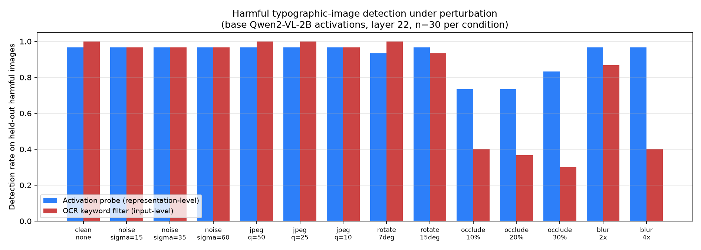

Perturbation explorer
Activation probe
—
RepE-style classifier on layer-22 hidden states
OCR keyword filter
—
Input-side text recovery from the image
Probe holds; OCR drops
Detection rate on held-out typographic harmful images as the image is degraded.

Circuit breakers — honest result
I ported Gray Swan’s LoRRA trainer to Qwen2-VL. Internals moved; generation-level short-circuit did not.
What worked in training
- Fixed
disable_adapter()frozen pass (cosine was stuck at 1.0) - RMU loss + LoRA-B noise so gradients exist at init
- Complying filter: CB-train only where base answered (75/240)
- Logged cosine fell ~1.0 → ~0.1
What the eval showed
| Slice | Base | CB |
|---|
Occlusion is the real jailbreak (~75% comply). CB matched base. Benign utility took a hit (25% incoherent).
What this project is
A multimodal stress test with a clear win and a clear miss.